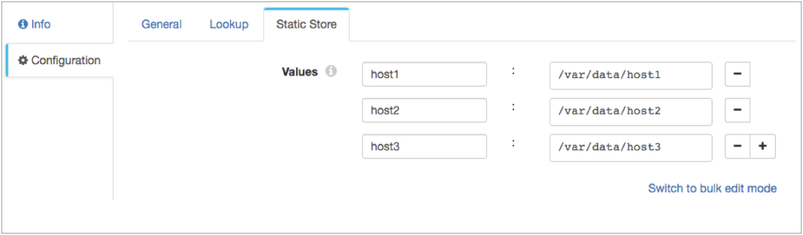

Static Lookup
The Static Lookup processor performs lookups of key-value pairs that are stored in local memory and passes the lookup values to fields. Use the Static Lookup to store String values in memory that the pipeline can look up at runtime to enrich records with additional data.
When you configure the Static Lookup processor, you specify whether the processor performs a bulk lookup of all keys in a batch, or performs an individual lookup of each key in a record. You use an expression to define the key to look up in local memory, and specify the String output field to write the lookup values to. You also define the key-value pairs to store in local memory.
Example
Let's assume that you need to develop a pipeline that reads log files created by multiple hosts. Each log file includes the name of the host. You want to process and write the log data to different local directories, based on the host that created the log file.
On the Lookup tab for the Static Lookup processor, you enter an expression that defines the hostname field as the key to look up. You specify a new directory field to write the lookup values to, as follows:

On the Static Store tab for the Static Lookup processor, you define each host name and associated directory as the key-value pairs to store in local memory:

${record:value('/directory')}/tmp/out/${YYYY()}-${MM()}-${DD()}-${hh()}
When you run the pipeline, the Static Lookup processor stores the static key-value pairs in memory. The processor looks up the value of the hostname field and passes the corresponding value to the directory output field. When the Local FS destination writes the data to output files, the destination writes the files to the appropriate directory for each host.
Configuring a Static Lookup Processor
Configure a Static Lookup processor to perform key-value lookups in memory.
-
In the Properties panel, on the General tab, configure the
following properties:
General Property Description Name Stage name. Description Optional description. Required Fields 
Fields that must include data for the record to be passed into the stage. Tip: You might include fields that the stage uses.Records that do not include all required fields are processed based on the error handling configured for the pipeline.
Preconditions Conditions that must evaluate to TRUE to allow a record to enter the stage for processing. Click Add to create additional preconditions. Records that do not meet all preconditions are processed based on the error handling configured for the stage.
On Record Error Error record handling for the stage: - Discard - Discards the record.
- Send to Error - Sends the record to the pipeline for error handling.
- Stop Pipeline - Stops the pipeline. Not valid for cluster pipelines.